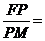

MATHS :: Lecture 04 :: Conic sections

Conics
Definition
A conic is defined as the locus of a point, which moves such that its distance from a fixed line to its distance from a fixed point is always constant. The fixed point is called the focus of the conic. The fixed line is called the directrix of the conic. The constant ratio is the eccentricity of the conic.
L is the fixed line – Directrix of the conic.
F is the fixed point – Focus of the conic.
constant ratio is called the eccentricity = ‘e’
Classification of conics with respect to eccentricity
1. If e < 1, then the conic is an Ellipse
1) The standard equation of an ellipse is
2) The line segment AA1 is the major axis of the ellipse, AA1 = 2a
3) The equation of the major axis is Y = 0
4) The line segment BB1 is the minor axis of the ellipse, BB1 = 2b
5) The equation of the minor axis is X = 0
6) The length of the major axis is always greater than the minor axis.
7) The point O is the intersection of major and minor axis.
8) The co-ordinates of O are (0,0)
9) The foci of the ellipse are S(ae,0)and SI(-ae,0)
10) The vertical lines passing through the focus are known as Latusrectum
11) The length of the Latusrectum is
12) The points A (a,0) and A1(-a,0)
13) The eccentricity of the ellipse is e =
14) The vertical lines M1M11and M2M21 are known as the directrix of the ellipse and their respective
equations are x = and x =
2. If e = 1, then the conic is a Parabola
.
- The Standard equation of the parabola is y2 = 4ax.
- The horizontal line is the axis of the parabola.
- The equation of the axis of the parabola is Y = 0
- The parabola y2 = 4ax is symmetric about the axis of the parabola.
- The vertex of the parabola is O (0,0)
- The line PQ is called the directrix of the parabola.
- The equation of the directrix is x = -a
- The Focus of the parabola is S(a,0).
- The vertical line passing through S is the latus rectum. LL1 is the Latus rectum and its length LL1 = 4a
3. If e > 1 ,then the conic is Hyperbola
.
1) The standard equation of an hyperbola is
2) The line segment AA1 is the Transverse axis of the hyperbola ,AA1 = 2a
3) The equation of the Transverse axis is Y = 0
4) The line segment BB1 is the Conjugate axis of the hyperbola ,BB1 = 2b
5) The equation of the Conjugate axis is X = 0
6) The point O is the intersection of Transverse and Conjugate axis.
7) The co-ordinates of O are (0,0)
8) The foci of the hyperbola are S(ae,0)and SI(-ae,0)
9) The vertical lines passing through the focus are known as Latusrectum
10) The length of the Latusrectum is
11) The points A (a,0) and A1(-a,0)
12) The eccentricity of the hyperbola is e =
13) The vertical lines M1M11and M2M21 are known as the directrix of the hyperbola and their respective equations are x = and x =
| Download this lecture as PDF here |